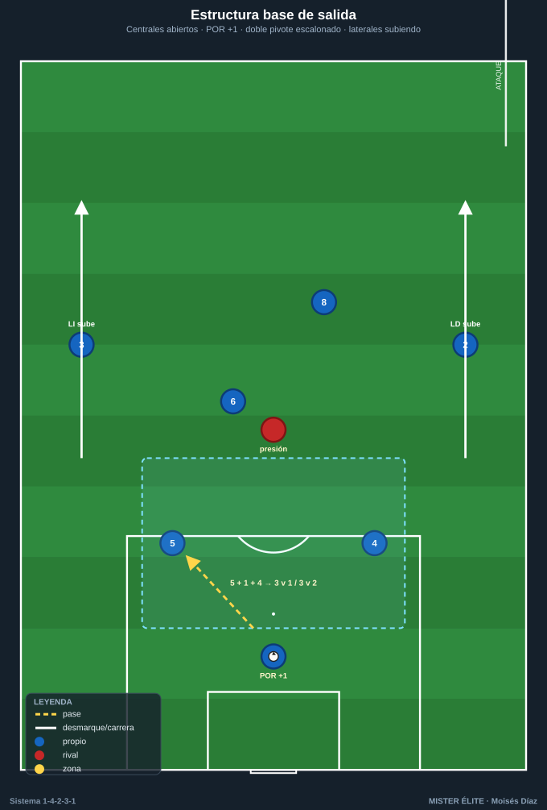
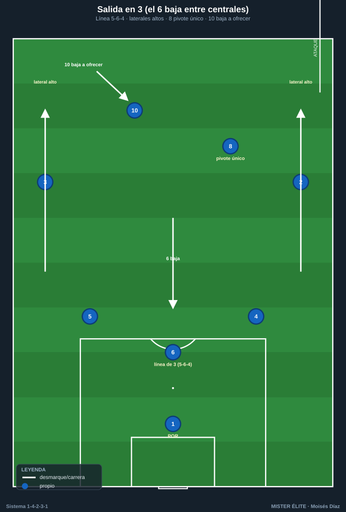
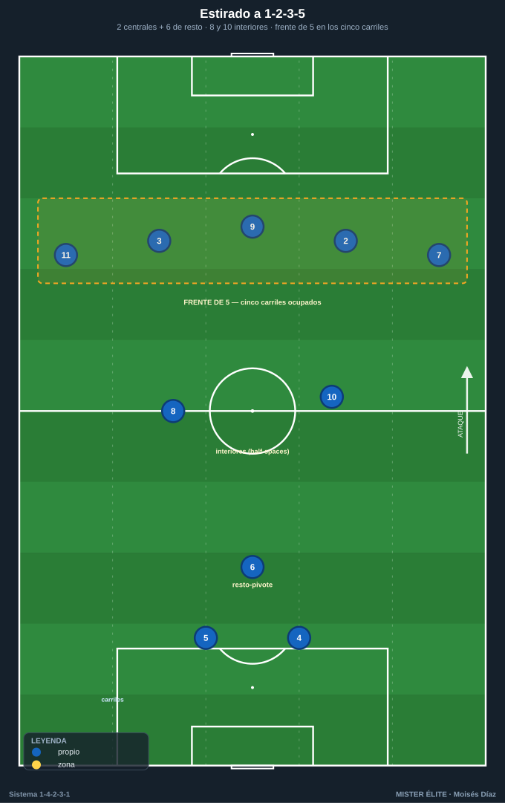
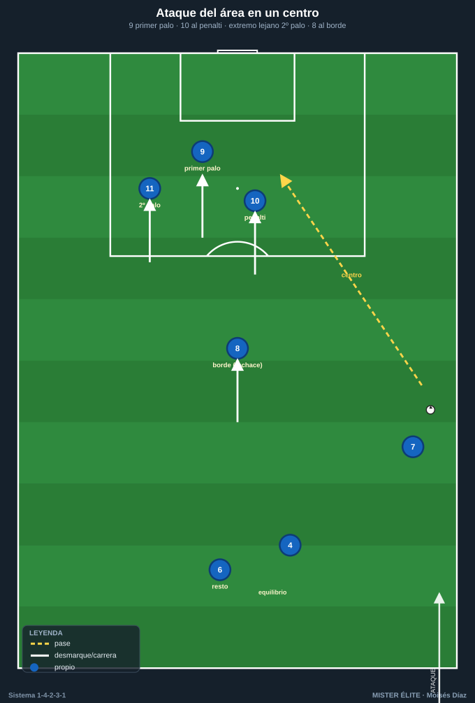

Módulo 03 · Fase ofensiva del 1-4-2-3-1
Con balón el sistema se estira a 1-2-3-5 / 1-4-3-3: suben los laterales, un pivote baja a construir y arriba se dibuja un frente de cinco. El destino preferente del pase que rompe líneas es siempre el mismo: la mediapunta (10) en la zona 14.
Atacar con el 1-4-2-3-1 es salir en superioridad, encontrar al hombre libre entre líneas y poblar el área desde varias alturas. Este módulo recorre el inicio de juego, la construcción, el último tercio y los automatismos que lo hacen repetible.
1. Inicio de juego — superar la primera presión
Estructura base de salida
Salida con los 2 centrales (4 y 5) abiertos a la anchura del área, el POR 1 como +1 (se ofrece y permite jugar en superioridad), y el doble pivote (6/8) por delante. Los laterales (2 y 3) abren y suben para alargar al rival en anchura y profundidad.
- Superioridad garantizada: 2 centrales + portero = 3 contra el primer punta (3v1) o contra dos puntas (3v2).
- El 6 es la primera referencia: se ofrece entre o por delante de los centrales para recibir de cara. Si lo marcan, arrastra y libera la línea de pase al 8.
- Regla del +1: el portero solo entra en la cadena cuando crea superioridad real: recibe, fija al punta y descarga al hombre libre.

Salida en 3 (un pivote baja entre centrales)
Cuando el rival presiona con dos o tres puntas: - El MC 6 baja entre los centrales 4 y 5 (línea de 3: 5–6–4) o a un costado (salida en 3 asimétrica, tipo Lavolpe). - Los centrales se abren más y los laterales (2/3) suben a la línea del 8 → línea de 3 atrás (4–6–5) + el 8 de pivote. Si ambos laterales se proyectan alto, la estructura ofensiva resultante es el 1-2-3-5. - El 8 queda como pivote único receptor y el 10 baja un escalón para dar dos alturas de pase tras la salida.

Mecanismos para superar la presión alta
- Fijar para liberar: el central conduce hacia el punta y, al saltar el rival, libera al pivote o al lateral.
- Tercer hombre desde el portero: POR → central → pivote de espaldas → descarga al 8 que aparece de cara.
- Cambio de orientación: si presionan un lado, al lateral del lado contrario que queda libre.
- Pase a romper líneas hacia el 10: si queda libre entre líneas, central o pivote filtran directo.
- Balón largo al 9 como recurso: si la presión asfixia, el 9 fija y prolonga; el 8 y el 10 cazan segundas jugadas.
Coaching salida: nunca los dos pivotes a la misma altura — siempre escalonados (6 bajo / 8 alto) para dar dos alturas de pase y mantener resto ante pérdida.
2. Construcción en zona media
Relación de los dos pivotes (6/8)
- 6 (ancla): juega más bajo, organiza, da el primer pase de progresión y queda como seguro ante pérdida.
- 8 (box-to-box): medio escalón por delante, conduce, recibe entre líneas y es el que llega a finalización.
- Escalonamiento permanente: cuando 6 recibe abajo, 8 sube; cuando 8 baja, 6 cubre. Nunca planos; uno siempre protege la línea de centrales.
La mediapunta (10) entre líneas — zona 14
- El 10 ocupa la zona 14: el destino preferente del pase que rompe líneas.
- Cómo recibe: medio de cara, con un hombro abierto al campo contrario, en el carril interior o en los half-spaces; juega en el punto ciego entre el pivote rival y su línea de centrales.
- Movilidad: si lo marcan al hombre, se va para arrastrar y libera el espacio para el 8 o el 9.
- Apoyo al 10: siempre dos opciones al recibir — el 9 a la espalda (soltar de primeras) y un extremo o lateral en amplitud (cambiar de orientación).
Cómo se estira el sistema (→ 1-2-3-5 / 1-4-3-3)
- Laterales (2/3) altos dan la amplitud.
- Extremos (7/11) abiertos o pisando por dentro.
- Un pivote sube (8) y el otro (6) queda de resto-pivote → estructura 1-2-3-5: 2 centrales + 1 pivote / línea de creación / 5 en la última línea.
Coaching construcción: ocupación de carriles — los cinco carriles (2 bandas, 2 interiores, central) ocupados, y dos jugadores nunca en el mismo carril a la misma altura. Si el extremo pisa dentro, el lateral da la amplitud; si el extremo abre, el lateral entra por dentro.

3. Último tercio — finalización
El delantero (9): apoyo + ruptura + fijar
- Fija a los dos centrales rivales: ancla la última línea y abre los espacios interiores para 10 y 8.
- Doble movimiento: amaga al pie (apoyo, recibe y descarga al 10) y rompe a la espalda. El 8 y el 10 leen ese movimiento para ocupar el espacio que libera.
- Ataque del área: primer rematador; primer palo o punto de penalti según el centro.
Llegada de segunda línea (10 y 8)
- El 10, tras combinar, ataca el área por el carril interior — la llegada sorpresa al borde.
- El 8 llega desde atrás sin balón a rematar o a recoger el rechace. Es la "llegada desde atrás" que sorprende a la defensa orientada al balón.
Centros y ataque del área (referencia de ocupación)
Patrón de 3 dentro + 1 al borde + 1 retrasado: - 9 → primer palo / punto de penalti. - 10 → segundo palo / zona de remate central. - Extremo del lado contrario (7 u 11) → segundo palo. - 8 → borde del área (rechaces). - Pivote de resto (6) + central que sube → equilibrio ante la transición.

Desdoblamiento: extremo dentro + lateral fuera
- El extremo pisa por dentro (al half-space), atrae al lateral rival y libera la banda.
- El lateral desdobla por fuera → 2v1 sobre el lateral rival.
- Triángulo de banda: extremo (interior) – lateral (fuera) – pivote/10 (apoyo) → pared, conducción o centro raso/tenso.
- Variante inversa: extremo abre, lateral entra por dentro (lateral invertido) para reforzar el centro y dar el resto.
4. Automatismos ofensivos
- Pared (one-two): 8/10 al 9 que devuelve de primeras a la carrera del que la dio. Patrón estrella para entrar por el interior tras fijar al pivote rival.
- Tercer hombre: A pasa a B (de espaldas) → B descarga rápido a C que llega de cara. Típico: central → 9 (espaldas) → 10 que aparece.
- Triángulo de banda: el 10 bascula al carril del balón para el apoyo interior; combinan en corto para fijar y soltar al hombre libre (lateral desdoblado o extremo a la espalda).
- Llegada desde atrás del 8: cuando el balón está en banda y la defensa se cierra, el 8 ataca el borde/área sin balón. Arranca cuando el extremo encara.
- Rotaciones de carril: extremo dentro → lateral fuera; o 10 cae y 8 pisa la zona 14. Se rotan las piezas, no las zonas.
- Cambio de orientación rápido: 6/10 cambian de banda de un toque cuando la presión se ha cargado a un lado → el lado débil ataca en 1v1 / 2v1.
Ideas clave
- Salir en superioridad (centrales + POR como +1) y escalonar siempre el doble pivote.
- Con balón el sistema se estira a 1-2-3-5: laterales altos, un pivote baja, frente de cinco arriba.
- El 10 en la zona 14 es el destino del pase que rompe líneas: recibe medio de cara con dos opciones.
- Ocupar los cinco carriles sin duplicar carril a la misma altura (desdoblamiento extremo-lateral).
- El 9 fija para liberar a 10 y 8; la llegada de segunda línea decide partidos.
Errores comunes
- Pivotes planos o ambos pegados a los centrales: sin alturas de pase ni resto de pérdida.
- Buscar al 10 con el cuerpo mal perfilado: recibe de espaldas y no puede girar.
- Saltarse al 10 en la progresión: se pierde al hombre libre de la zona de más valor.
- Dos jugadores en el mismo carril a la misma altura: se anula la amplitud y el interior.
- Centrar sin poblar el área con las tres alturas (9, 10, extremo lejano + 8 al borde).